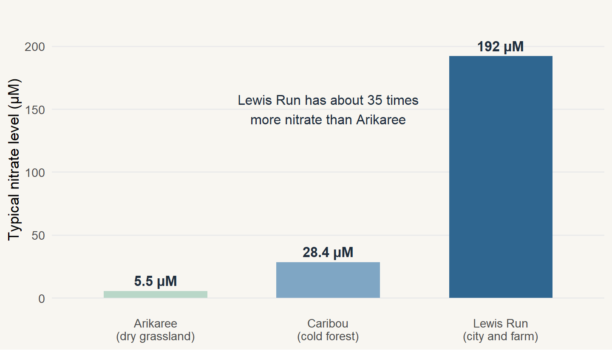
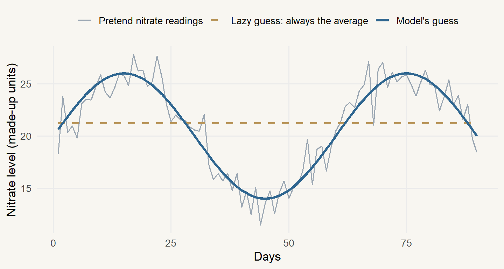
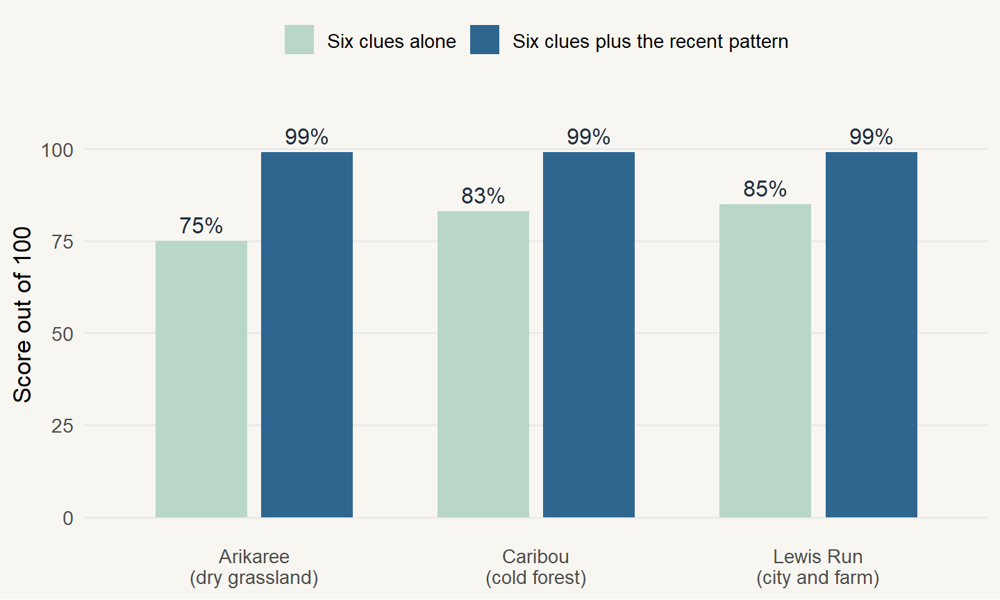
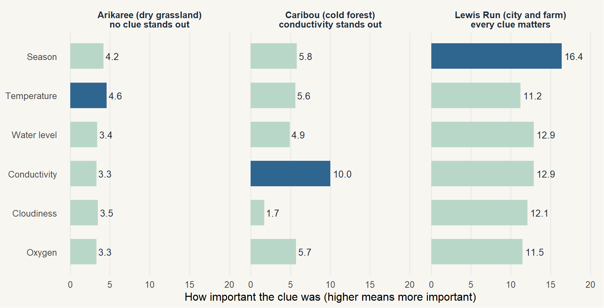

The problem
Imagine a storm hits a farming region at 2 am. By dawn the river has turned brown, and for a few hours the amount of nitrate in the water shoots up before falling back. Now imagine the one nitrate sensor on that river stopped recording at midnight because its lens got dirty. The biggest spike of the month happened, and nobody has a number for it.
That matters because nitrate is one of the most closely watched substances in a river. It is a form of nitrogen that dissolves in water1, and it comes from fertiliser, sewage and animal waste. A little is normal. Too much feeds huge amounts of algae. When the algae die and rot, they use up the oxygen in the water, and fish and insects struggle to breathe. Rivers also feed many water supplies, and in drinking water nitrate is a health risk, especially for babies under six months. That is why the US Environmental Protection Agency caps it at 10 milligrams per litre (measured as nitrogen) in public supplies.
1 Nitrate is made of one nitrogen atom and three oxygen atoms. Plants need nitrogen to grow, which is why fertiliser contains it.
So managers want to watch nitrate closely, but they are squeezed from three sides. Nitrate sensors are expensive, so most rivers only get a few. The sensors also fail, because in-water sensors are prone to technical errors that leave gaps in the record (Kermorvant et al. 2021). And budgets are limited, so someone has to decide which rivers get a nitrate sensor and what to do when one breaks. Cheaper sensors that measure simple things, like how warm the water is or how muddy it looks, are far more common. A team of researchers asked whether those cheaper readings could act as clues that help explain what nitrate is doing.
This post follows their work and answers three questions along the way:
- Which cheap clues move together with nitrate?
- Does the same recipe work in every river?
- What should a manager actually do with this, starting next week?
The short version
Six simple clues let the researchers follow about three quarters or more of nitrate’s rises and falls. Adding what nitrate had been doing a moment earlier took that to about 99%. But each river had a different most useful clue, so every river needs its own model. The research points to a careful pilot at a river that already has a nitrate sensor, not to switching nitrate sensors off.
Where the evidence comes from
The main study was written by Kermorvant et al. (2023) and published in the journal PLOS ONE, where other scientists review work before it is printed. The team used open data from the National Ecological Observatory Network (NEON) in the United States (National Ecological Observatory Network, n.d.). Sensors in three rivers took a reading every 15 minutes for about two years, which gave roughly 70,000 readings per river. The rivers were chosen because they are so different, which makes it a fair test of whether a finding holds up. Figure 1 shows just how different, even before we look at any clues.
The unit on the chart is µM2. Table 1 adds what surrounds each river and how well the clues did, which we will unpack shortly.
2 µM means micromoles per litre, a way of counting how many nitrate molecules are in a litre of water. You only need to compare the three numbers with each other.
3very different rivers
70,000sensor readings per river
75-85%followed using the clues alone
99%once the recent pattern is added
| River | Setting | Typical nitrate (µM) | Score using the clues alone | Most useful clue |
|---|---|---|---|---|
| Arikaree (Colorado) | Semi-arid grassland and farming | 5.5 | 75% | None stands out |
| Caribou (Alaska) | Subarctic forest, minimal human disturbance | 28.4 | 83% | Conductivity |
| Lewis Run (Virginia) | Temperate climate, city and farm influence | 192 | 85% | Season |
Meet the six clues
You don’t need a science background for these. Table 2 explains each clue in plain words and gives a sensible reason it could be linked to nitrate. I will keep using these names for the rest of the post.
| Clue | What it means | Why it could be a clue |
|---|---|---|
| Season (time of year) | Where we are in the year. The model uses the date to pick up yearly rhythms. | Farming and weather follow the calendar, such as fertiliser spreading and snowmelt. |
| Water temperature | How warm or cold the river water is. | Warmer water speeds up life in the river, including the algae and bacteria that use and make nitrogen. |
| Water level | How high the river is. It rises after rain or snowmelt. | Rain and snowmelt wash nitrate in from the land, or dilute it. |
| Conductivity | How easily electricity passes through the water. Pure water barely carries any, but dissolved salts and minerals help it along. A higher reading means more dissolved material. | Fertiliser and other runoff dissolve in water, so they can rise together. |
| Cloudiness (turbidity) | How murky the water is. Mud, silt and tiny particles scatter light, so a turbidity sensor shines a light through the water and measures how much gets scattered. After a storm, the reading jumps. | Storms stir up mud and also wash in whatever is sitting on the land. |
| Dissolved oxygen | The amount of oxygen mixed into the water, which fish and insects need to breathe. | Algae make oxygen by day and use it at night, and they take up nitrate as they grow. |
What the researchers did
Think of it as detective work. The researchers gave a computer model the six clues and asked it to work out how nitrate was rising and falling. They did it in three steps:
- Draw flexible curves. For each clue, the model finds how nitrate tends to change when that clue changes. The links are often curved, not straight lines, so the model is allowed to bend.
- Add the recent pattern. Nitrate right now is closely related to nitrate a moment ago. If it was 20 at 10:00, it is very unlikely to be 5 at 10:15. The model uses this idea to pick up what the clues miss.
- Take clues away one at a time. To find out which clue mattered most, they removed each one and checked how much worse the model got. A bigger drop means a more important clue.
Next comes the number that confuses most people, the “75%”. Before you see any real results, Figure 2 explains it with a made-up example, so you have a benchmark for what a good score looks like.

What does “75% explained” mean, and how is it worked out?
Imagine you had to guess nitrate for every 15 minutes. The laziest guess is the average level every time. That guess is wrong whenever the real level swings up or down, which is the dashed line in Figure 2. The model’s guess is closer, which is the blue line.
The score measures how much of the lazy guess’s error disappears. In rough terms, it is 100% minus the model’s error as a share of the lazy guess’s error. If the lazy guess is off by 100 points in total and the model is off by 25, the score is 75%.
A score of 0% means the model is no better than guessing the average. A score of 100% means it follows every wiggle. In the made-up example above, the model scores about 89%.
What they found
Start with the first question, about which clues move together with nitrate. Figure 3 shows how well the model followed the real nitrate readings at each river. Using the six clues alone, it scored 75% at Arikaree, 83% at Caribou and 85% at Lewis Run. Adding the recent pattern step took every river to about 99%. The authors put it this way in their abstract:
Total deviance explained by the models was high for all sites (99%).
That is the study’s own wording (Kermorvant et al. 2023), and “deviance explained” is the same score out of 100 we just practised. All six clues made a real difference at every river3, so none could be dropped without losing something.
3 Here “real” means the link was too consistent to be a fluke.

Midway summary
So far we know the six clues can follow most of nitrate’s rises and falls. The surprising part is next. The same toolkit works in a desert river and an Arctic one, but the winning clue changes from river to river.
The surprise: same toolkit, different winner
The second question is where it gets interesting. Think of the six clues as six witnesses. In every river all six had something to say, but a different witness was the most useful each time. Figure 4 shows this. Each bar is roughly how many points the score drops when that clue is taken away, so a longer bar means a more important clue. The dark bar marks the most important clue in each river.

Arikaree, the dry grassland river in Colorado, was the quiet one. No clue was important on its own, and temperature was only slightly ahead. The clues together still scored 75%, and the recent pattern covered most of what was left. Caribou, the cold forest river in Alaska, had one clear standout. Conductivity, the clue that tells us about dissolved salts, was well ahead of the next best, while cloudiness barely registered. That river has minimal human disturbance. Lewis Run in Virginia was the opposite of quiet. It sits near a city and farmland, it had by far the most nitrate, and every clue mattered, with the season clue highest.
The shape of the links differed between rivers too. At low conductivity, nitrate tended to rise as conductivity rose at Arikaree, but it fell at Lewis Run. Water level showed a similar split, with nitrate tending to rise as the water rose at Caribou, while Lewis Run showed the opposite for most of the range. This is why the authors concluded that local settings still matter. The same toolkit works in every river, but each river needs its own model.
Can the clues rescue a broken sensor?
This is where the research starts to look practical. Remember the sensor that went dark at midnight. The same team tested exactly that situation in a second study (Kermorvant et al. 2021). They took two years of real nitrate data from Arikaree and deleted pieces of it on purpose, single readings, then whole days and weeks. Then they asked the model to refill the gaps using the other clues.
For single missing readings, the model’s guess landed within the nitrate sensor’s own precision 72% of the time. It got worse when whole stretches of data were missing. How well it worked also depended on whether the other clues were available at that moment. When they were, even a sudden, event-driven peak in nitrate was rebuilt well. In other words, the clues can help patch short holes in a nitrate record4, which matters most when the hole covers the event you care about.
4 These holes often come from biofouling, which is slime, algae and tiny animals growing on a sensor and blocking its view.
What a manager should do next
That brings us to the third question. The research was designed to help people understand nitrate, not to replace nitrate sensors, so the plan below stays close to what was tested. Table 3 lays it out as six steps. Some of the “why” notes are my own reading of the findings, so treat them as sensible suggestions and not as results from the studies.
| Step | What to do | Why it matters |
|---|---|---|
| 1. Pick one pilot river | Choose a river that already has a working nitrate sensor, sensors for the six clues, and about two years of readings every 15 minutes. | The model learns from real nitrate readings. The study had about 70,000 per river, so a few weeks of data is not enough. |
| 2. Check all six clues are recorded | Make sure the six clues are recorded at the same times as nitrate. Fix any missing sensor first. | Every clue earned its place at every river in the study, so dropping one costs you accuracy. |
| 3. Ask a statistician to fit that river’s own model | Ask for flexible curves plus the recent pattern step. Budget extra time, because the study’s authors had to hand-code parts of the modelling. | The study found no single model worked across rivers, and standard tools struggled with this much data. |
| 4. Ask for three things back | (a) The score out of 100 using the clues alone. (b) A chart like Figure 4 showing which clue matters most. (c) A plain list of the results. | A score near the study’s 75% to 85% suggests the clues carry most of the story at your river. A much lower score suggests something you are not measuring is driving nitrate, so look for it. The clue that matters most is the sensor you can least afford to lose, so keep it clean and calibrated. |
| 5. Run a hide-and-check test | Hide some real nitrate readings, such as single readings, then a day, then a week, and see how close the model’s guesses are. | The 2021 team used this same trick at Arikaree. It tells you how far to trust the model before your real sensor breaks. |
| 6. Decide, then repeat | If the test goes well, use the model to patch short gaps and label those values as estimates. Then repeat steps 1 to 5 at a second river. | The research never tested a river with no nitrate sensor at all, so that step needs its own proof at each river. |
A few things the research does not support. Do not remove a nitrate sensor because of this work alone. Do not copy a model from one river to another. Do not treat gaps filled by the model as measured values, and always label them as estimates. And do not read “99%” as proof you can do without nitrate readings, because that score includes the recent pattern step, which only works from readings that were actually recorded.
Two limits are worth keeping in mind. The main study covers only three rivers and about two years of data, so it is too early to say how well the pattern holds in other places or unusual years. The gap-filling test also came from a single river, so it needs repeating before anyone relies on it widely.
Conclusion
Back to the storm and the sensor that went dark at midnight. The research gives a manager a realistic answer. Six simple clues explained between 75% and 85% of nitrate’s rises and falls in three very different rivers, and the recent pattern took that to about 99%. The same clues mattered everywhere, but which clue mattered most changed from river to river, so each river needs its own model. The follow-up study shows those clues can patch short gaps in a nitrate record, which is exactly the problem that opens this post. So the sensible move is a careful pilot at a river that already has a nitrate sensor. Fit its own model, test it by hiding real readings, and only then lean on it. Used that way, cheap clues can protect the nitrate record you already pay for, and they might eventually help decide where the next nitrate sensor is worth buying.
Behind the post: how this differs from the journal paper
The paper this post is based on and this post cover the same evidence, but they do different jobs. The paper is a stand-alone, archival piece that other scientists can check and reuse. This post is meant to help a busy manager decide what to do, so it focuses on relevance, why it matters, actions and limits.
| Journal paper | This post | |
|---|---|---|
| Who it is for | Other scientists, who will check and reuse the method | River managers, who need to decide what to do |
| Order | Builds slowly through methods, results and discussion | Answer first, then the evidence, then the plan |
| Language | Technical terms such as deviance and mixed models | Plain words and a made-up example to explain scores |
| Visuals | Several figures and tables, including raw sensor data | Four charts, each answering one question |
| Limits | Listed in the discussion section | Tied to the next step so the reader knows what to do |
| Goal | Complete, defensible and permanent | Clear, easy to act on and honest about limits |
I borrowed three ideas from pieces I studied earlier. A story opening makes a dry topic easier to care about. Background comes before numbers so readers can judge them. And in a data story the headline result goes early, so people keep reading.
On the charts, each one carries a single message. Soft colours keep the page calm, and the darker bar or line always marks the thing to look at first.
References
Kermorvant, C., B. Liquet, G. Litt, J. B. Jones, K. Mengersen, E. E. Peterson, R. J. Hyndman, and C. Leigh. 2021. “Reconstructing Missing and Anomalous Data Collected from High-Frequency in-Situ Sensors in Fresh Waters.” International Journal of Environmental Research and Public Health 18 (23): 12803. https://doi.org/10.3390/ijerph182312803.
Kermorvant, C., B. Liquet, G. Litt, K. Mengersen, E. E. Peterson, R. J. Hyndman, J. B. Jones Jr., and C. Leigh. 2023. “Understanding Links Between Water-Quality Variables and Nitrate Concentration in Freshwater Streams Using High Frequency Sensor Data.” PLOS ONE 18 (6): e0287640. https://doi.org/10.1371/journal.pone.0287640.
National Ecological Observatory Network. n.d. “Water Quality and Nitrate in Surface Water Data Products.” https://www.neonscience.org/.